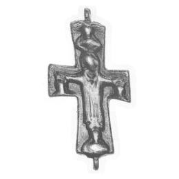

Catalog › CE-0012 · LOV1999-6
Valvă anterioară de encolpion cu Răstignirea
sec. VII–XI (601–1100) · Szőny, Komárom (Kom.), Ungaria · Muzeul Național Maghiar, Budapesta, inv. 1877.52.2
single valve of a reliquary cross, bronz; c. VII–XI (601–1100); found at Szőny, Komárom (Kom.), Ungaria; kept at Muzeul Național Maghiar, Budapesta.


Identificare
- Categorie
- Valvă izolată
- Material
- Bronz
- Tehnică
- Turnare în relief
- Dimensiuni
- Î 78 × L 39 mm
Iconografie
- Avers
- Răstignirea (Hristos în colobium)
- Descriere avers
- Hristos în colobium, în relief; la capetele brațelor, câte un bust.
Datare și atribuire
- Datare
- sec. VII–XI (601–1100)
- Centru
- Siria–Palestina
Descoperire
- Localitate
- Szőny
- Regiune
- Komárom (Kom.)
- Țară
- Ungaria
- Context
- Colecție (fără context)
- Coordonate
- 47.7316° N, 18.1714° E
- Precizia locului
- Doar localitatea
Păstrare și referințe
- Colecție
- Muzeul Național Maghiar, Budapesta
- Nr. inventar
- 1877.52.2
- Bibliografie
- Zs. Lovag, Mittelalterliche Bronzegegenstände des Ungarischen Nationalmuseums (Catalogi Musei Nationalis Hungarici, Series Archaeologica III), Budapest, 1999, p. 24, cat. nr. 6, reprodusă la Abb. 6 (planșele, p. 130). Bibliografie citată în sursă: Bárány-Oberschall 1953, 217, Abb. 66; Lovag 1971, 148, Fig. 2/1.
- Figura
- Abb. 6
- Planșe
- Lovag 1999, planșele, p. 130
- Observații
- Datare după Lovag: sec. VII–XI. VII–XI. Locul de descoperire este dat în sursă ca incert („angeblich”). Intrat în muzeu prin cumpărare. Coordonate: ale localității (aproximative), nu date în sursă.
Citare: Corpus Encolpiorum, CE-0012, Valvă anterioară de encolpion cu Răstignirea, --root/piese/LOV1999-6/ (accesat 2026-10-17).